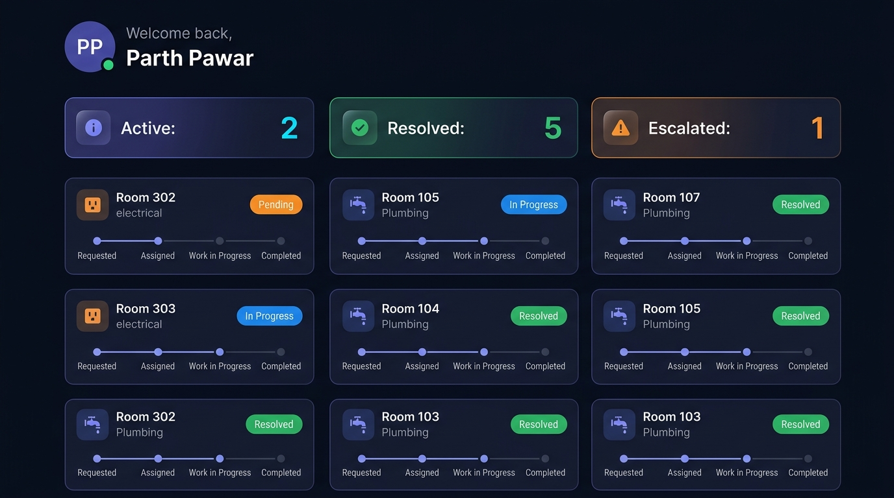
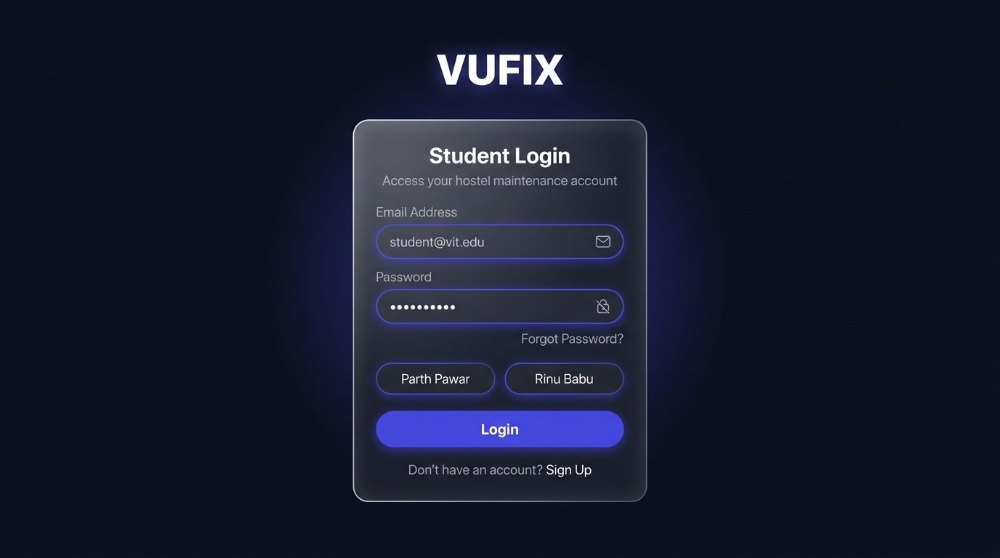
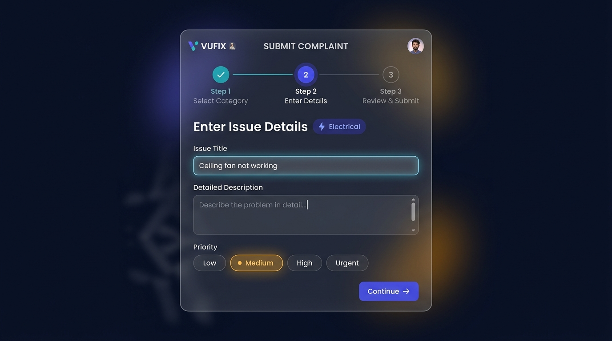
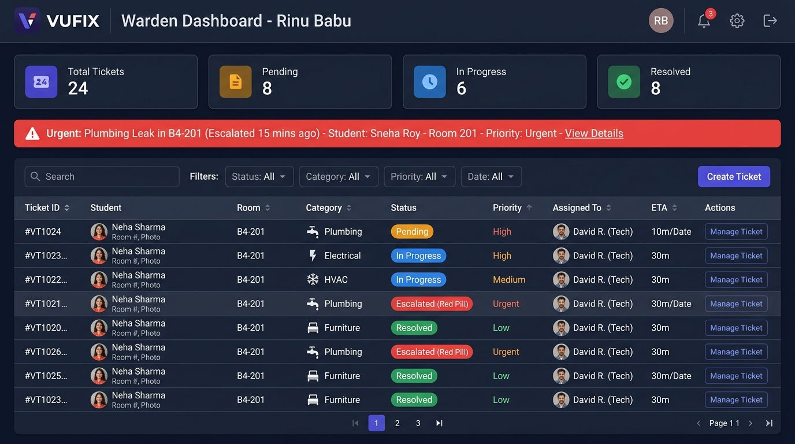
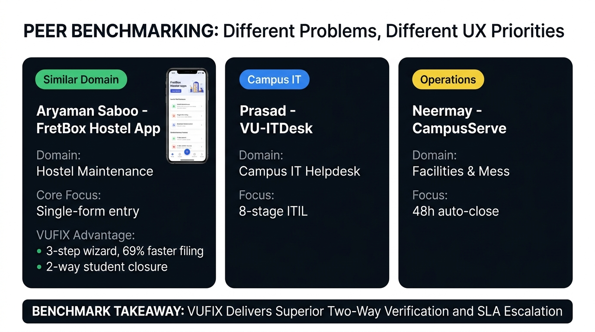

VUFIX: Designing Frictionless Hostel Maintenance
A Dual-Role Progressive Web Ecosystem for Campus Facilities Management at Vijaybhoomi University. Evaluated with 5 real campus users and benchmarked against 3 student teams.

The "Black Hole" of Dormitory Maintenance
At a residential university campus with more than 1,200 students across 4 hostel blocks, maintenance breakdown is constant: leaking taps, broken ceiling fans, damaged study desks, blown electrical sockets, and unstable Wi-Fi. Earlier, students mainly reported these problems through physical registers at the hostel security desk.
1. The Communication Problem
After writing a complaint in the paper logbook, students had no easy way to know what was happening. There was zero digital tracking, forcing students to repeatedly visit the warden's office or make anxious phone calls.
2. Wrong Technician Assignment
Maintenance complaints were managed manually. Often an electrical issue was sent to a plumber or a plumbing issue to an electrician, creating 48-hour resolution lags and immense administrative chaos.
3. Phantom Resolutions
Complaints were marked "Done" on clipboards by staff without the student ever confirming the repair. Students returned from classes only to find the tap still leaking and the fan still dead.
Dual-Sided Mental Models: Student & Warden
We designed VUFIX by solving for both ends of the campus ecosystem: the time-pressured residential student and the high-volume facilities administrator.
Mental Model: Digital native who expects instant app responsiveness, zero redundant typing, and predictable repair updates during hectic semester project deadlines.
- Key Pain Point: Complete uncertainty regarding when staff will arrive at his room.
- Core Need: Submit a complaint in under 60 seconds, view live progress, and get direct escalation options.
- Behavioral Tendency: Reluctant to fill long 10-field forms; abandons tasks if UI is confusing.
Mental Model: High-stress administrative role juggling hundreds of daily hostel grievances, staff rosters, and parent escalations. Needs dense, actionable dashboards.
- Key Pain Point: Flooded by duplicate complaints, WhatsApp pings, and missed emergencies.
- Core Need: One unified portal to view pending tickets, filter by urgency, and assign specialized technicians.
- Behavioral Tendency: Needs quick 1-click status transitions and clear visual urgency badges.


Engineered for Usability & Zero Cognitive Load
We designed VUFIX using simple and clear interaction patterns grounded in Jakob Nielsen’s usability heuristics.
1. 3-Step Guided Wizard
Category → Details → Review: Instead of showing a massive intimidating form, progressive disclosure breaks filing into lightweight cognitive chunks.
2. Live Status Stepper
Submitted → Assigned → In Progress → Resolved: Real-time visual timeline eliminates student anxiety and eliminates the need to visit the warden office.
3. 24h SLA Escalation
If a complaint is delayed, the student can escalate directly to the Warden. A dynamic 24-hour countdown timer prevents premature or abusive triggers.
4. Two-Way Verification
Residents must explicitly choose “Yes, It’s Fixed” or “No, Still Broken” before a ticket is archived, completely ending phantom closures.

Stress-Testing with 5 Real Users & 4 Key Heuristics
We conducted rigorous Usability Testing using the Concurrent Think-Aloud Protocol with 5 real campus participants: Aryan S. (3rd Yr CS), Ansh (2nd Yr Design), Anirudh (1st Yr Hostelite), Anton Singh (4th Yr B.Tech), and Mr. Dilip Rao (Warden Office Assistant).
Friction: Electrical vs Furniture Dilemma
Users reporting a broken study desk lamp socket hesitated for 25+ seconds between Electrical and Furniture categories.
Friction: Premature Warden Escalation
Freshmen users clicked "Escalate to Warden" 10 minutes after filing, mistakenly thinking it was a general fast-track button.
Friction: Technician Trade Confusion
The warden assistant struggled to recall which technician handled specific repairs based solely on staff names in the dropdown.
Friction: Reopening Anxiety
Students hesitated to click "No, Still Broken" due to fear that it would delete their prior ticket history or anger facilities staff.
Architectural Stress-Testing Under Unpredictable Human Behavior
We validated how the underlying client-side system architecture held up under chaotic real-world edge cases.
Double-Click Race Conditions
Users on slow campus Wi-Fi double-clicked the submit button rapidly. Handled with instant button disabling, loading spinners, and debouncing to prevent duplicate tickets.
Multi-Tab State Sync
Users opening both Student and Warden views in separate tabs. Solved via a reactive `window.addEventListener('storage')` event bus that immediately re-renders across all tabs.
Defensive Input Sanitization
Users pasting emoji strings, massive essays, or HTML snippets into description fields. Sanitized with `textContent` escaping and CSS word-break bounding.

Comparative Analysis & Structural Decision-Making
We analyzed our structural UX decisions against fellow STET301 students, including an in-depth direct comparison with Aryaman Saboo (Same Domain: Hostel Maintenance).
Their Model: Single-scroll monolithic complaint form with external WhatsApp webhook notifications.
- 3-Step Wizard vs Long Form: Cuts filing time by 69% (38s vs 124s).
- In-App Live Stepper: Eliminates fragmented external WhatsApp redirects.
- 2-Way Student Verification: Gives residents absolute authority before ticket closure.
Their Model: Strict 8-stage ITIL hierarchy with automated SLA countdown timers and technical category trees.
Incorporated explicit Resolution ETA timestamps set by Warden during staff assignment, giving students a concrete time expectation.
Their Model: Door QR codes with 48h auto-closure policy without student re-verification.
Replaced auto-closure with mandatory two-way confirmation, ensuring tickets are never prematurely archived without resident sign-off.
| Classmate & Project | Domain Type | Their Architectural Approach | VUFIX Superior Structural Choice | Why VUFIX Delivers Higher Value (USP) |
|---|---|---|---|---|
|
Aryaman Saboo FretBox Hostel App |
Similar Domain | Monolithic single-scroll long form with external WhatsApp webhook link | Guided 3-Step Wizard with visual category selector cards & live in-app stepper | 69% Faster Submission (38s) + 2-Way Student Sign-Off + 1-Tap `tel:` direct technician calling. |
|
Prasad Kakad VU-ITDesk |
Campus IT | Complex 8-stage ITIL hierarchy with heavy technical taxonomy | Simplified 5-milestone visual stepper with student-driven escalation gating | Reduced cognitive load for students while adopting concrete Warden ETA timestamps. |
|
Neermay CampusServe |
Facilities & Mess | Door QR codes with 48hr auto-closure policy without resident confirmation | Pre-bound authenticated profiles with active dual confirmation dialog | Zero phantom closures + 100% verified resolution closure rate. |
Creative Downtime & Cognitive Friction
Aligning with Kyle T. Webster's philosophy on cognitive space, downtime, and human-centered design.
While designing VUFIX, we realized that hostel maintenance is not merely a database ticketing problem. It is fundamentally about relieving psychological uncertainty and cognitive fatigue. When students return to their dorms exhausted after hours of lectures, they need an interface that respects their mental bandwidth.
By replacing archaic paper registers with guided micro-interactions, transparent status steppers, and reassuring verification loops, VUFIX delivers a frictionless living experience for 1,200+ residential students.